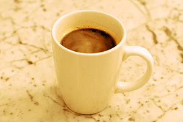
2 Shots of espresso and hot water. Basically a black coffee that you can add cream & sugar to
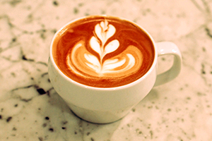
Espresso & steamed milk with a lot of foam
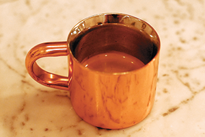
A straight shot, or two, of espresso and nothing else!
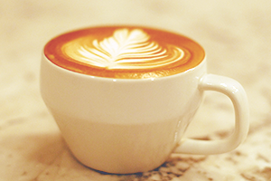
One part of espresso to two parts of steamed milk with very little foam
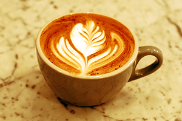
One part espresso to three parts of steamed milk with fine microbubble foam
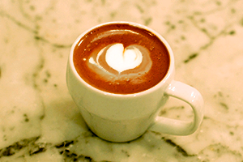
Equal parts espresso & steamed milk
A latte made with Ghirardelli dark chocolate
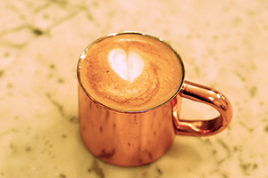
A double shot of espresso with Ghirardelli & Mexian Spiced chocolate
The boulevardier is a drink composed of whiskey, sweet vermouth, and Campari, garnished with an orange peel. Its creation is ascribed to Erskine Gwynne, an American-born writer who founded a monthly magazine in Paris called Boulevardier, which appeared from 1927 to 1932. The boulevardier is similar to a Negroni, sharing two of its three ingredients. It is differentiated by its use of bourbon whiskey or rye whiskey as its principal component instead of gin.
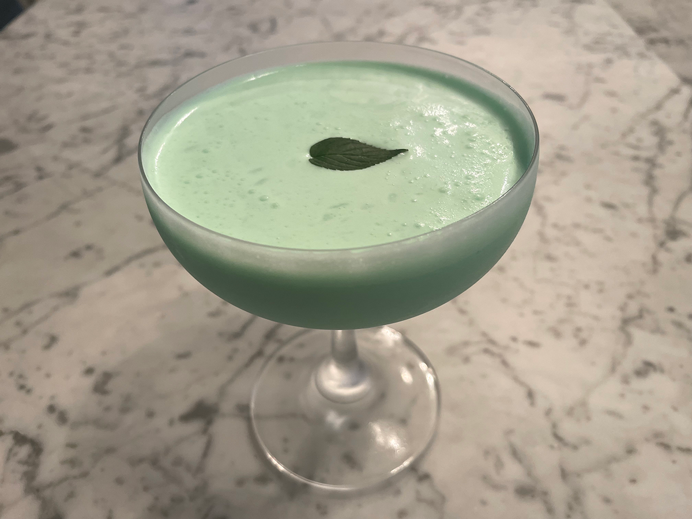
The Grasshopper is a green blast from the past featuring green creme de menthe, white creme de cacao and heavy cream. The drink was allegedly created in 1919 in New Orleans, but it didn’t become a household name until the 1950s. The original recipe results in a cocktail that looks like melted mint-chocolate-chip ice cream and kind of tastes like it, too.
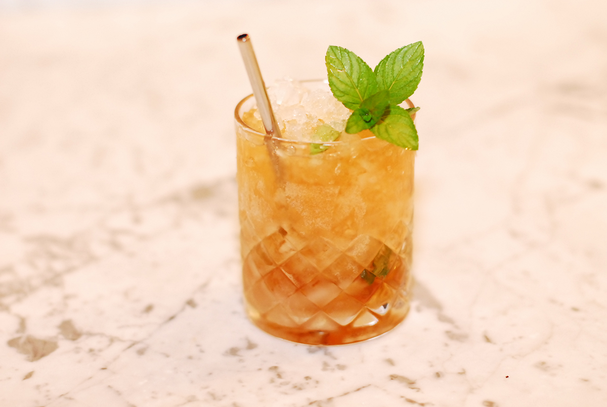
The Mint Julep is a bourbon cocktail best known for being the signature drink of the Kentucky Derby. Composed of bourbon, sugar, mint, bitters, crushed ice and a splash of rum.
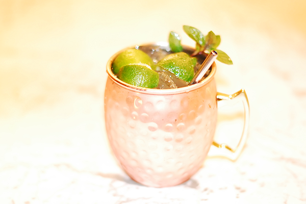
The Moscow Mule is a mid-century classic that was born in 1941 and helped contribute to vodka’s rise in America. The simple cocktail combines vodka with ginger beer and lime.
The story of how the Moscow Mule came about
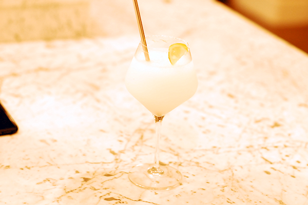
The Margarita is one of the most popular cocktails in North America. Combining the tang of lime and the sweetness of orange liqueur with the distinctive strength of tequila. Some say the cocktail was invented in 1948 in Acapulco, Mexico, when a Dallas socialite combined blanco tequila with Cointreau and lime juice for her guests. Order it straight up, on the rocks, or frozen.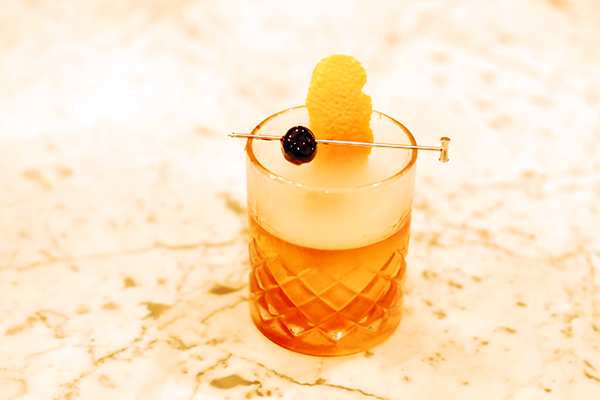
The old fashioned is a cocktail made by muddling sugar with bitters and water, adding whiskey or rye, and garnishing with orange slice or zest and a cocktail cherry. It is traditionally served in an old fashioned glass (also known as rocks glass), which predated the cocktail. Developed during the 19th century and given its name in the 1880s, it is an IBA Official Cocktail.
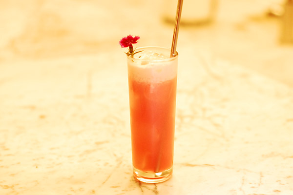
The pink lady is a classic cocktail with a light blush of color that's not as sweet as modern pink martinis. This was one of the first "girly drinks" and a favorite among high-society ladies from the 1930s through the 1950s.
Made with Gin, Apple Brandy, Grenadine, lemon juice and egg white. Don't let the egg white deter you; it's just for a nice frothy texture, which greatly enhances the drink.
Menu
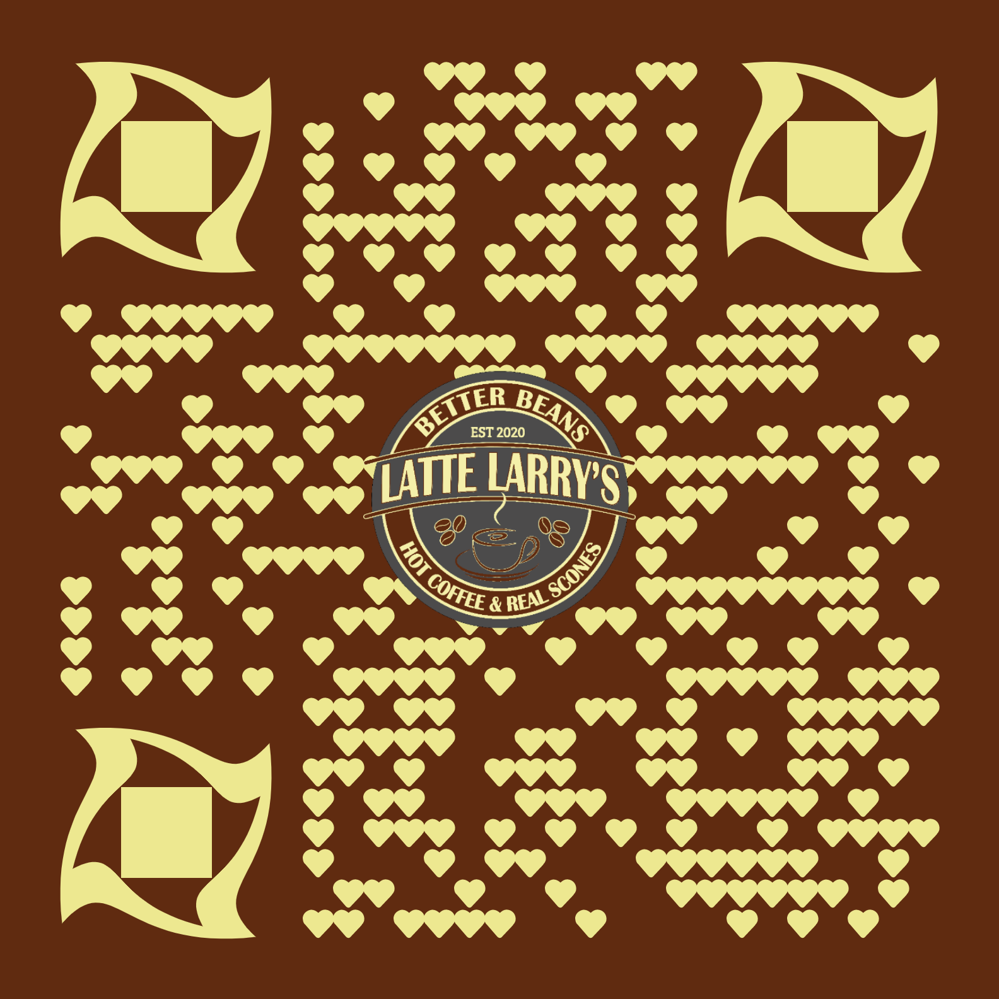
Address to Latte Larry's